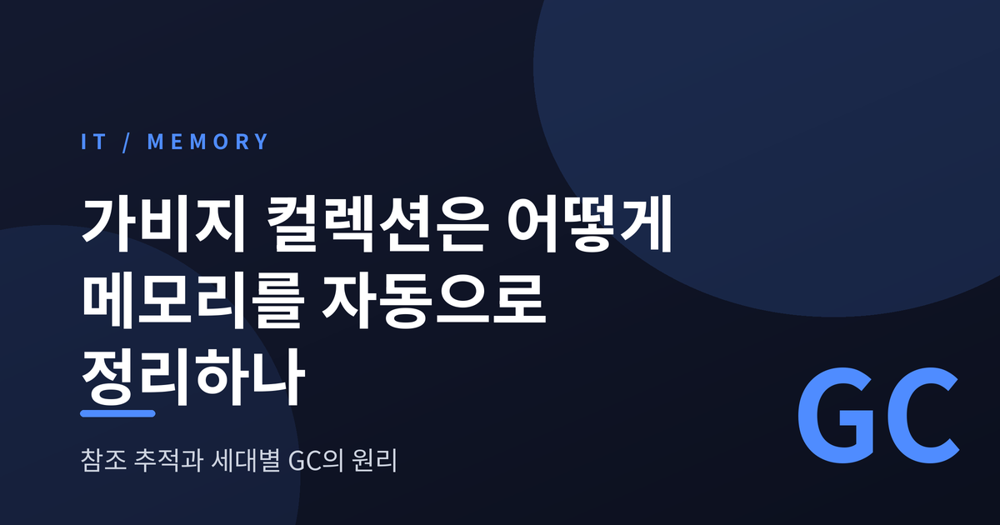
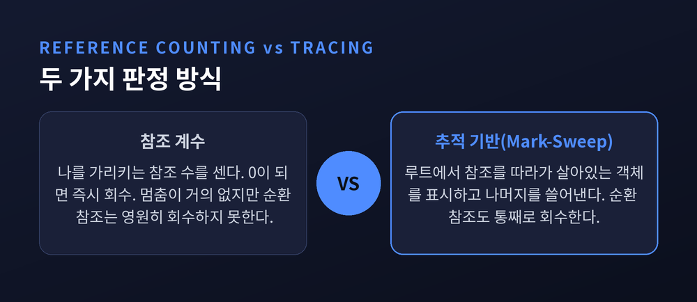
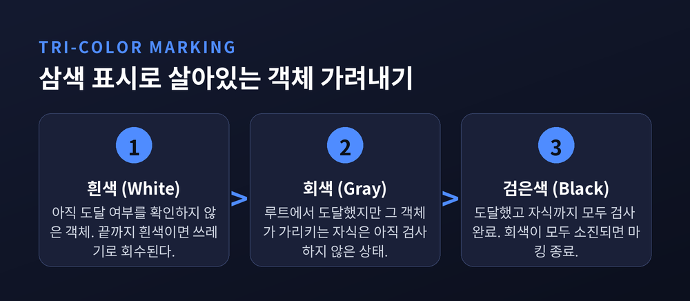
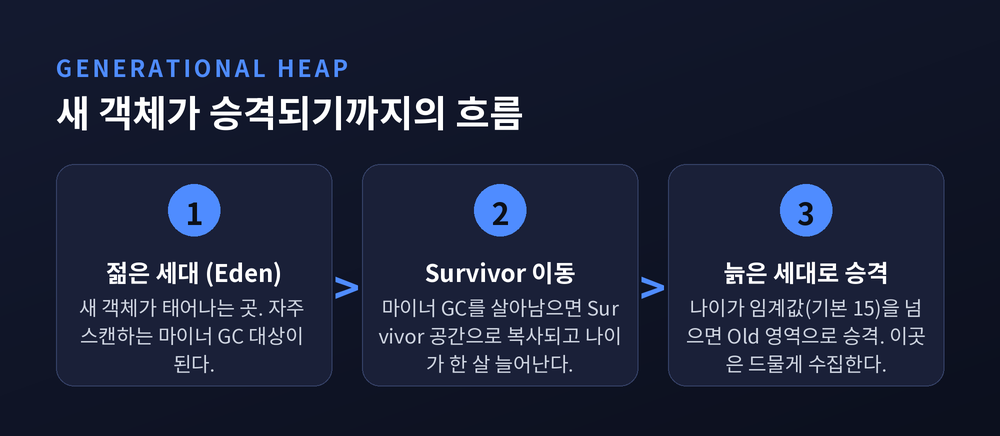
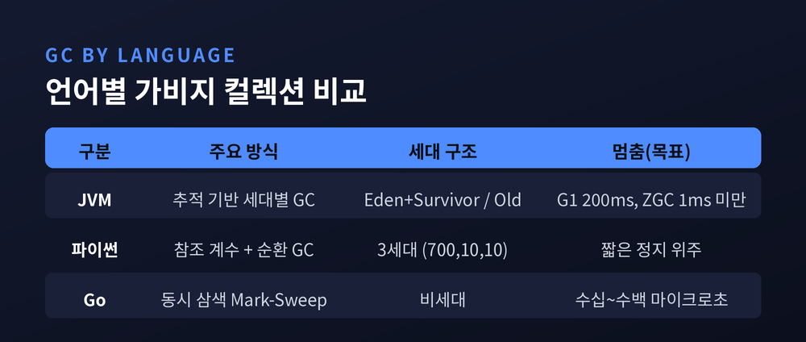
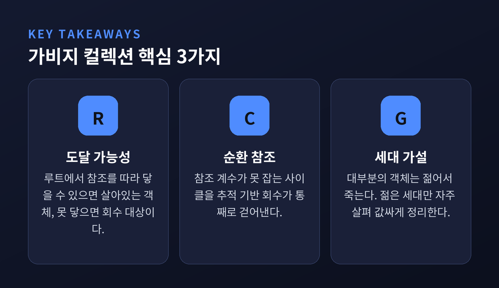

오늘은 가비지 컬렉션이 메모리를 어떻게 스스로 정리하는지 이야기해 보려 합니다. 먼저 결론부터 말씀드립니다. 핵심은 두 가지입니다. 하나는 “누가 이 객체를 아직 쓰고 있는가”를 판정하는 방식이고, 다른 하나는 “대부분의 객체는 젊어서 죽는다”는 관찰을 이용하는 세대별 전략입니다. 아래에서 참조 계수, 추적 기반 회수, 그리고 세대별 GC의 원리를 차례로 풀어 보겠습니다.
프로그램은 실행되는 동안 힙에 객체를 끝없이 만들어 냅니다. 쓰지 않게 된 객체를 그대로 두면 메모리가 새어 나갑니다. 반대로 아직 쓰는 객체를 실수로 지우면 프로그램이 엉뚱한 곳을 참조하다 무너집니다.
예전에는 이 해제를 사람이 직접 했습니다. C 계열에서 malloc으로 얻은 메모리는 free로 손수 돌려줘야 합니다. 지금은 다릅니다. 런타임이 “더 이상 닿을 수 없는 객체는 쓰레기”라는 규칙으로 회수를 대신합니다.
판정의 기준은 하나입니다. 도달 가능성입니다. 전역 변수, 스택의 지역 변수, 레지스터 같은 뿌리(루트)에서 출발해 참조를 따라갈 수 있으면 살아있는 객체입니다. 어디서도 닿을 수 없으면 회수 대상입니다.
가장 직관적인 방식은 참조 계수입니다. 객체마다 “나를 가리키는 참조가 몇 개인가”를 세는 숫자를 붙입니다. 참조가 하나 생기면 1을 더하고, 사라지면 1을 뺍니다. 이 숫자가 0이 되는 순간, 아무도 쓰지 않는다는 뜻이므로 곧바로 메모리를 돌려줍니다.
장점은 분명합니다. 객체의 수명이 명확합니다. 회수를 위해 프로그램을 길게 멈출 필요도 없습니다.
그러나 치명적인 약점이 하나 있습니다. 순환 참조입니다. A가 B를 가리키고 B가 A를 가리키면, 바깥에서 아무도 둘을 쓰지 않아도 서로의 숫자가 1로 남습니다. 0이 되지 않으니 영원히 회수되지 않습니다. 이것이 참조 계수만으로는 메모리를 완전히 정리할 수 없는 이유입니다.

추적 기반 GC는 접근이 반대입니다. “누가 나를 가리키나”를 세지 않습니다. 대신 뿌리에서 출발해 실제로 참조를 밟아 나가며 살아있는 객체를 찾아냅니다.
동작은 두 단계로 나뉩니다. 표시(mark) 단계에서는 루트에서 닿는 모든 객체에 “살아있음”을 새깁니다. 쓸기(sweep) 단계에서는 표시되지 않은 객체의 메모리를 회수합니다.
이 방식은 순환 참조를 깔끔하게 처리합니다. 서로만 가리키는 두 객체는 루트에서 닿을 수 없으니, 통째로 쓰레기로 판정됩니다. 대신 값을 치릅니다. 순회하는 동안 프로그램을 잠시 멈추는 것, 이른바 정지 구간(Stop-The-World)이 생길 수 있습니다.
이 멈춤을 줄이려고 나온 것이 삼색 표시입니다. 객체를 흰색, 회색, 검은색으로 나눕니다. 흰색은 아직 확인 안 된 것, 회색은 도달했지만 자식을 아직 안 본 것, 검은색은 자식까지 다 본 것입니다. 회색이 모두 사라지면 마킹이 끝나고, 끝까지 흰색인 객체만 회수합니다. 마킹 도중 프로그램이 참조를 바꿔치기해도 살아있는 객체를 놓치지 않도록, 쓰기 장벽(write barrier)이 변경을 GC에 귀띔합니다. 이 조합 덕에 프로그램과 GC가 나란히 달릴 수 있습니다.

여기까지가 기초입니다. 이제 본론입니다. 현대 GC의 성능을 떠받치는 관찰이 하나 있습니다. 약한 세대 가설입니다. 한 문장으로 “대부분의 객체는 젊어서 죽는다”는 것입니다.
빈말이 아닙니다. 1993년 배럿과 존의 측정에서는 할당된 데이터의 절반 이상이 10KB를 할당하기도 전에 죽었고, 32KB를 넘겨 살아남은 것은 10%에 못 미쳤습니다. 갓 만든 객체는 금방 버려지고, 오래 산 객체는 계속 오래 사는 경향이 뚜렷했습니다.
여기서 영리한 발상이 나옵니다. 모든 객체를 매번 똑같이 검사하는 것은 낭비입니다. 젊은 객체가 모인 곳만 자주 뒤지면, 적은 비용으로 많은 쓰레기를 걷어낼 수 있습니다.
그래서 힙을 둘로 나눕니다. 새 객체가 태어나는 젊은 세대, 오래 버틴 객체가 머무는 늙은 세대입니다. 새 객체는 젊은 세대에 놓이고, 이곳은 자주 스캔합니다. 젊은 세대에서 여러 번 살아남으면 늙은 세대로 승격됩니다.

수집도 두 종류로 갈립니다. 젊은 세대만 훑는 것이 마이너 GC입니다. 대부분이 쓰레기라 빠르고 값쌉니다. 늙은 세대까지 손대는 것이 메이저 GC입니다. 비용이 크고 멈춤도 길지만, 드물게 일어납니다. 자주 하는 일은 가볍게, 무거운 일은 가끔. 세대별 GC의 요령은 이 한 문장에 담깁니다.
원리는 같아도 구현은 언어마다 다릅니다.
자바(JVM)는 세대 구조를 가장 정교하게 씁니다. 젊은 세대는 다시 Eden과 두 개의 Survivor 공간으로 나뉩니다. 새 객체는 Eden에 놓이고, Eden이 차면 마이너 GC가 돌면서 살아남은 객체를 Survivor로 복사합니다. 객체는 살아남을 때마다 나이를 한 살 먹고, 이 나이가 임계값(기본 15)을 넘으면 늙은 세대로 승격됩니다. G1 GC는 힙을 작은 리전으로 쪼개 쓰레기가 많은 곳부터 걷어내며, 멈춤 목표를 기본 200ms로 잡습니다. ZGC는 여기서 더 나아가, 힙이 아무리 커도 멈춤을 1ms 아래로 유지하는 것을 목표로 삼습니다.

파이썬(CPython)은 두 방식을 겹쳐 씁니다. 주력은 참조 계수이고, 참조 계수가 못 잡는 순환 참조만 세대별 mark-and-sweep으로 보조합니다. 이 순환 수집기도 3세대 구조를 씁니다. 기본 임계값은 (700, 10, 10)입니다. 0세대는 객체가 700개 넘게 늘면 수집하고, 1세대는 0세대 수집이 10번 돌 때마다, 2세대는 1세대 수집이 10번 돌 때마다 움직입니다.
Go는 또 결이 다릅니다. 세대를 나누지 않는 대신, 삼색 마킹을 프로그램과 동시에 돌리는 데 집중합니다. 힙이 직전 수집보다 두 배로 불어나면 GC가 도는데, 이 기준은 GOGC 값(기본 100)으로 조절합니다. 멈춤은 보통 수십에서 수백 마이크로초에 그칩니다.
세대별 GC가 만능은 아닙니다. 가설은 어디까지나 경향입니다. 오래 사는 객체가 많은 프로그램에서는 이점이 줄어듭니다. 승격이 잘못 일어나면 늙은 세대가 붐비고, 결국 무거운 메이저 GC를 자주 부르게 됩니다. 멈춤을 1ms 아래로 눌러도, 그 대가로 처리량이나 메모리를 더 쓰는 맞바꿈이 따릅니다. 모든 상황에 최적인 단 하나의 수집기는 아직 없습니다.

정리하면 이렇습니다. 가비지 컬렉션은 결국 “누가 아직 쓰는가”를 판정하는 기술이고, 세대별 GC는 “젊은 것부터 자주 살핀다”는 상식을 코드로 옮긴 것입니다.
“자주 하는 일은 가볍게, 무거운 일은 가끔.” 좋은 청소는 부지런함이 아니라 순서에서 나옵니다.
메모리 관리를 다시 손으로 하겠냐고 물으신다면, 저는 망설임 없이 아니라고 답하겠습니다.